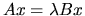

Next: Index by Keyword
Up: LAPACK Users' Guide Release
Previous: Notes
Contents
Index
- 1
-
E. ANDERSON, Z. BAI, C. BISCHOF, J. DEMMEL, J. DONGARRA, J. DU CROZ,
A. GREENBAUM, S. HAMMARLING, A. MCKENNEY, AND D. SORENSEN, LAPACK: A
portable linear algebra library for high-performance computers, Computer
Science Dept. Technical Report CS-90-105, University of Tennessee,
Knoxville, TN, May 1990.
(Also LAPACK Working Note #20).
- 2
-
E. ANDERSON, Z. BAI, AND J. DONGARRA, Generalized QR factorization
and its applications, Linear Algebra and Its Applications, 162-164 (1992),
pp. 243-271.
(Also LAPACK Working Note #31).
- 3
-
E. ANDERSON, J. DONGARRA, AND S. OSTROUCHOV, Installation guide for
LAPACK, Computer Science Dept. Technical Report CS-92-151,
University of Tennessee, Knoxville, TN, March 1992.
(Also LAPACK Working Note #41).
- 4
-
ANSI/IEEE, IEEE Standard for Binary Floating Point Arithmetic, New York, Std
754-1985 ed., 1985.
- 5
-
ANSI/IEEE, IEEE Standard for Radix Independent Floating Point Arithmetic, New
York, Std 854-1987 ed., 1987.
- 6
-
M. ARIOLI, J. W. DEMMEL, AND I. S. DUFF, Solving sparse linear
systems with sparse backward error, SIAM J. Matrix Anal. Appl., 10 (1989),
pp. 165-190.
- 7
-
M. ARIOLI, I. S. DUFF, AND P. P. M. DE RIJK, On the augmented system
approach to sparse least squares problems, Num. Math., 55 (1989),
pp. 667-684.
- 8
-
Z. BAI, , AND H. ZHA, A new preprocessing algorithm for the
computation of the generalized singular value decomposition, SIAM J. Sci.
Comp., 14 (1993), pp. 1007-1012.
- 9
-
Z. BAI AND J. W. DEMMEL, On a block implementation of Hessenberg
multishift QR iteration, International Journal of High Speed Computing, 1
(1989), pp. 97-112.
(Also LAPACK Working Note #8).
- 10
-
Z. BAI AND J. W. DEMMEL, Computing the
generalized singular value decomposition, SIAM J. Sci. Comp., 14 (1993),
pp. 1464-1486.
(Also LAPACK Working Note #46).
- 11
-
Z. BAI AND J. W. DEMMEL, Design of a parallel
nonsymmetric eigenroutine toolbox, Part I, in Proceedings of the Sixth
SIAM Conference on Parallel Processing for Scientific Computing, R. F. et al. Sincovec, ed., Philadelphia, PA, 1993, Society for Industrial and
Applied Mathematics, pp. 391-398.
Long version available as Computer Science Report CSD-92-718,
University of California, Berkeley, 1992.
- 12
-
Z. BAI, J. W. DEMMEL, AND A. MCKENNEY, On computing condition
numbers for the nonsymmetric eigenproblem, ACM Trans. Math. Softw., 19
(1993), pp. 202-223.
(LAPACK Working Note #13).
- 13
-
Z. BAI AND M. FAHEY, Computation of error bounds in linear least
squares problems with equality constraints and generalized linear model
problems.
to appear, 1997.
- 14
-
J. BARLOW AND J. DEMMEL, Computing accurate eigensystems of scaled
diagonally dominant matrices, SIAM J. Num. Anal., 27 (1990), pp. 762-791.
(Also LAPACK Working Note #7).
- 15
-
J. BILMES, K. ASANOVIC, J. DEMMEL, D. LAM, AND C. CHIN, Optimizing
matrix multiply using PHiPAC: A portable, high-performance, ANSI C
coding methodology, Computer Science Dept. Technical Report
CS-96-326, University of Tennessee, Knoxville, TN, 1996.
(Also LAPACK Working Note #111).
- 16
-
Å. BJ¨ORCK, Numerical Methods for Least Squares Problem,
SIAM, 1996.
- 17
-
L. S. BLACKFORD, J. CHOI, A. CLEARY, E. D'AZEVEDO, J. DEMMEL, I. DHILLON,
J. DONGARRA, S. HAMMARLING, G. HENRY, A. PETITET, K. STANLEY, D. WALKER, AND
R. C. WHALEY, ScaLAPACK Users' Guide, Society for Industrial and
Applied Mathematics, Philadelphia, PA, 1997.
- 18
-
A. J. COX AND N. J. HIGHAM, Backward error bounds for constrained
least squares problems, BIT, 39 (1999), pp. 210-227.
- 19
-
C. R. CRAWFORD, Reduction of a band-symmetric generalized eigenvalue
problem, Comm. ACM, 16 (1973), pp. 41-44.
- 20
-
J. J. M. CUPPEN, A divide and conquer method for the symmetric
tridiagonal eigenproblem, Numerische Math., 36 (1981), pp. 177-195.
- 21
-
M. DAYDE, I. DUFF, AND A. PETITET, A Parallel Block Implementation
of Level 3 BLAS for MIMD Vector Processors, ACM Trans. Math. Softw., 20
(1994), pp. 178-193.
- 22
-
B. DE MOOR AND P. VAN DOOREN, Generalization of the singular value
and QR decompositions, SIAM J. Matrix Anal. Appl., 13 (1992),
pp. 993-1014.
- 23
-
P. DEIFT, J. W. DEMMEL, L.-C. LI, AND C. TOMEI, The bidiagonal
singular values decomposition and Hamiltonian mechanics, SIAM J. Numer.
Anal., 28 (1991), pp. 1463-1516.
(LAPACK Working Note #11).
- 24
-
J. DEMMEL, Underflow and the reliability of numerical software,
SIAM J. Sci. Stat. Comput., 5 (1984), pp. 887-919.
- 25
-
J. DEMMEL, Applied Numerical
Linear Algebra, SIAM, Philadelphia, PA, 1997.
- 26
-
J. W. DEMMEL, The condition number of equivalence transformations
that block diagonalize matrix pencils, SIAM J. Numer. Anal., 20 (1983),
pp. 599-610.
- 27
-
J. W. DEMMEL AND N. J. HIGHAM, Stability of block algorithms with
fast level 3 BLAS, ACM Trans. Math. Softw., 18 (1992), pp. 274-291.
(Also LAPACK Working Note #22).
- 28
-
J. W. DEMMEL AND N. J. HIGHAM, Improved error
bounds for underdetermined systems solvers, SIAM J. Matrix Anal. Appl., 14
(1993), pp. 1-14.
(Also LAPACK Working Note #23).
- 29
-
J. W. DEMMEL AND B. KÅGSTR¨OM, Computing stable
eigendecompositions of matrix pencils, Lin. Alg. Appl., 88/89 (1987),
pp. 139-186.
- 30
-
J. W. DEMMEL AND B. KÅGSTR¨OM, The generalized Schur
decomposition of an arbitrary pencil
 :
robust software with
error bounds and applications, part I: Theory and algorithms, ACM Trans.
Math. Softw., 19 (1993), pp. 160-174.
:
robust software with
error bounds and applications, part I: Theory and algorithms, ACM Trans.
Math. Softw., 19 (1993), pp. 160-174.
- 31
-
J. W. DEMMEL AND B. KÅGSTR¨OM, The generalized
Schur decomposition of an arbitrary pencil :
robust
software with error bounds and applications, part II: Software and
applications, ACM Trans. Math. Softw., 19 (1993), pp. 175-201.
- 32
-
J. W. DEMMEL AND W. KAHAN, Accurate singular values of bidiagonal
matrices, SIAM J. Sci. Stat. Comput., 11 (1990), pp. 873-912.
(Also LAPACK Working Note #3).
- 33
-
J. W. DEMMEL AND X. LI, Faster numerical algorithms via exception
handling, IEEE Trans. Comp., 43 (1994), pp. 983-992.
(Also LAPACK Working Note #59).
- 34
-
J. W. DEMMEL AND K. VESELI´C, Jacobi's method is more accurate
than QR, SIAM J. Matrix Anal. Appl., 13 (1992), pp. 1204-1246.
(Also LAPACK Working Note #15).
- 35
-
I. DHILLON, A new O(n2) algorithm for the symmetric tridiagonal
eigenvalue/eigenvector problem, Computer Science Division Technical
Report no. UCB/CSD-97-971, University of California, Berkeley, CA, May
1997.
- 36
-
I. S. DHILLON AND B. N. PARLETT, Orthogonal eigenvectors and
relative gaps, June 1999.
to appear.
- 37
-
J. DONGARRA AND S. OSTROUCHOV, Quick installation guide for LAPACK
on unix systems, Computer Science Dept. Technical Report
CS-94-249, University of Tennessee, Knoxville, TN, September 1994.
(LAPACK Working Note #81).
- 38
-
J. J. DONGARRA, J. R. BUNCH, C. B. MOLER, AND G. W. STEWART, LINPACK
Users' Guide, Society for Industrial and Applied Mathematics, Philadelphia,
PA, 1979.
- 39
-
J. J. DONGARRA, J. DU CROZ, I. S. DUFF, AND S. HAMMARLING, Algorithm
679: A set of Level 3 Basic Linear Algebra Subprograms, ACM
Trans. Math. Soft., 16 (1990), pp. 18-28.
- 40
-
J. J. DONGARRA, J. DU CROZ, I. S. D
UFF, AND S. HAMMARLING, A set of Level 3
Basic Linear Algebra Subprograms, ACM Trans. Math. Soft., 16
(1990), pp. 1-17.
- 41
-
J. J. DONGARRA, J. DU CROZ, S. HAMMARLING, AND R. J. HANSON, Algorithm 656: An extended set of FORTRAN Basic Linear Algebra
Subroutines, ACM Trans. Math. Soft., 14 (1988), pp. 18-32.
- 42
-
J. J. DONGARRA, J. DU CROZ, S. HAMMARLING, AND R. J. HANSON, An extended set of
FORTRAN basic linear algebra subroutines, ACM Trans. Math. Soft., 14
(1988), pp. 1-17.
- 43
-
J. J. DONGARRA, I. S. DUFF, D. C. SORENSEN, AND H. A. VAN DER VORST, Numerical Linear Algebra for High-Performance Computers, Society for
Industrial and Applied Mathematics, Philadelphia, PA, 1998.
- 44
-
J. J. DONGARRA AND E. GROSSE, Distribution of mathematical software
via electronic mail, Communications of the ACM, 30 (1987), pp. 403-407.
- 45
-
J. J. DONGARRA, F. G. GUSTAFSON, AND A. KARP, Implementing linear
algebra algorithms for dense matrices on a vector pipeline machine, SIAM
Review, 26 (1984), pp. 91-112.
- 46
-
J. J. DONGARRA, S. HAMMARLING, AND D. C. SORENSEN, Block reduction
of matrices to condensed forms for eigenvalue computations, JCAM, 27
(1989), pp. 215-227.
(LAPACK Working Note #2).
- 47
-
J. DU CROZ AND N. J. HIGHAM, Stability of methods for matrix
inversion, IMA J. Numer. Anal., 12 (1992), pp. 1-19.
(Also LAPACK Working Note #27).
- 48
-
J. DU CROZ, P. J. D. MAYES, AND G. RADICATI DI BROZOLO, Factorizations of band matrices using Level 3 BLAS, Computer Science
Dept. Technical Report CS-90-109, University of Tennessee, Knoxville,
TN, 1990.
(LAPACK Working Note #21).
- 49
-
A. DUBRULLE, The multishift QR algorithm: is it worth the
trouble?, Palo Alto Scientific Center Report G320-3558x, IBM Corp., 1530
Page Mill Road, Palo Alto, CA 94304, 1991.
- 50
-
L. ELD´EN, Perturbation theory for the least squares problem with
linear equality constraints, SIAM J. Numer. Anal., 17 (1980),
pp. 338-350.
- 51
-
V. FERNANDO AND B. PARLETT, Accurate singular values and
differential qd algorithms, Numerisch Math., 67 (1994), pp. 191-229.
- 52
-
K. A. GALLIVAN, R. J. PLEMMONS, AND A. H. SAMEH, Parallel algorithms
for dense linear algebra computations, SIAM Review, 32 (1990),
pp. 54-135.
- 53
-
F. GANTMACHER, The Theory of Matrices, vol. II (transl.),
Chelsea, New York, 1959.
- 54
-
B. S. GARBOW, J. M. BOYLE, J. J. DONGARRA, AND C. B. MOLER, Matrix
Eigensystem Routines - EISPACK Guide Extension, vol. 51 of Lecture Notes
in Computer Science, Springer-Verlag, Berlin, 1977.
- 55
-
G. GOLUB AND C. F. VAN LOAN, Matrix Computations, Johns Hopkins
University Press, Baltimore, MD, third ed., 1996.
- 56
-
A. GREENBAUM AND J. J. DONGARRA, Experiments with QL/QR methods
for the symmetric tridiagonal eigenproblem, Computer Science Dept.
Technical Report CS-89-92, University of Tennessee, Knoxville,TN, 1989.
(LAPACK Working Note #17).
- 57
-
M. GU AND S. EISENSTAT, A stable algorithm for the rank-1
modification of the symmetric eigenproblem, Computer Science Department
Report YALEU/DCS/RR-916, Yale University, New Haven, CT, 1992.
- 58
-
M. GU AND S. EISENSTAT, A divide-and-conquer
algorithm for the bidiagonal SVD, SIAM J. Mat. Anal. Appl., 16 (1995),
pp. 79-92.
- 59
-
W. W. HAGER, Condition estimators, SIAM J. Sci. Stat. Comput., 5
(1984), pp. 311-316.
- 60
-
S. HAMMARLING, The numerical solution of the general
Gauss-Markov linear model, in Mathematics in Signal Processing,
T. S. et al.. Durani, ed., Clarendon Press, Oxford, UK, 1986.
- 61
-
N. J. HIGHAM, Efficient algorithms for computing the condition
number of a tridiagonal matrix, SIAM J. Sci. Stat. Comput., 7 (1986),
pp. 150-165.
- 62
-
N. J. HIGHAM, A survey of
condition number estimation for triangular matrices, SIAM Review, 29
(1987), pp. 575-596.
- 63
-
N. J. HIGHAM, FORTRAN codes for
estimating the one-norm of a real or complex matrix, with applications to
condition estimation, ACM Trans. Math. Softw., 14 (1988), pp. 381-396.
- 64
-
N. J. HIGHAM, Algorithm 674:
FORTRAN codes for estimating the one-norm of a real or complex matrix, with
applications to condition estimation, ACM Trans. Math. Softw., 15 (1989),
p. 168.
- 65
-
N. J. HIGHAM, Experience with a
matrix norm estimator, SIAM J. Sci. Stat. Comput., 11 (1990),
pp. 804-809.
- 66
-
N. J. HIGHAM, Perturbation theory
and backward error for AX-XB=C, BIT, 33 (1993), pp. 124-136.
- 67
-
N. J. HIGHAM, Accuracy and
Stability of Numerical Algorithms, SIAM, Philadelphia, PA, 1996.
- 68
-
S. HUSS-LEDERMAN, A. TSAO, AND G. ZHANG, A parallel implementation
of the invariant subspace decomposition algorithm for dense symmetric
matrices, in Proceedings of the Sixth SIAM Conference on Parallel Processing
for Scientific Computing, Society for Industrial and Applied Mathematics,
1993, pp. 367-374.
- 69
-
E. JESSUP AND D. SORENSEN, A parallel algorithm for computing the
singular value decomposition of a matrix, Mathematics and Computer Science
Division Report ANL/MCS-TM-102, Argonne National Laboratory, Argonne, IL,
December 1987.
- 70
-
B. KÅGSTRÖM, A direct method for reordering eigenvalues in
the generalized real Schur form of a regular matrix pair (a,b), in Linear
Algebra for Large Scale and Real-Time Applications, Kluwer Academic
Publishers, 1993, pp. 195-218.
- 71
-
B. KÅGSTRÖM, A perturbation
analysis of the generalized sylvester equation, SIAM J. Matrix Anal.
Appl., 15 (1994), pp. 1045-1060.
- 72
-
B. KÅGSTR¨OM, P. LING, AND C. V. LOAN, GEMM-based level 3
BLAS: High-performance model implementations and performance evaluation
benchmark, Tech. Rep. UMINF 95-18, Department of Computing Science, Umeå
University, 1995.
Submitted to ACM Trans. Math. Softw.
- 73
-
B. KÅGSTR¨OM AND P. POROMAA, Computing eigenspaces with
specified eigenvalues of a regular matrix pair (A,B) and condition
estimation: Theory, algorithms and software, Tech. Rep. UMINF 94.04,
Department of Computing Science, Umeå University, 1994.
- 74
-
B. KÅGSTRÖM AND P. POROMAA, LAPACK-style algorithms and
software for solving the generalized Sylvester equation and estimating the
separation between regular matrix pairs, ACM Trans. Math. Softw., 22
(1996), pp. 78-103.
- 75
-
B. KÅGSTRÖM AND L. WESTIN, Generalized schur methods with
condition estimators for solving the generalized Sylvester equation,
IEEE Trans. Autom. Contr., 34 (1989), pp. 745-751.
- 76
-
T. KATO, Perturbation Theory for Linear Operators, Springer-Verlag,
Berlin, 2 ed., 1980.
- 77
-
L. KAUFMAN, Banded eigenvalue solvers on vector machines, ACM
Trans. Math. Softw., 10 (1984), pp. 73-86.
- 78
-
C. L. LAWSON, R. J. HANSON, D. KINCAID, AND F. T. KROGH, Basic
linear algebra subprograms for Fortran usage, ACM Trans. Math. Soft., 5
(1979), pp. 308-323.
- 79
-
R. LEHOUCQ, The computation of elementary unitary matrices,
Computer Science Dept. Technical Report CS-94-233, University of
Tennessee, Knoxville, TN, 1994.
(Also LAPACK Working Note 72).
- 80
-
C. PAIGE, Computer solution and perturbation analysis of generalized
linear least squares problems, Math. of Comput., 33 (1979), pp. 171-183.
- 81
-
C. PAIGE, Fast numerically
stable computations for generalized linear least squares problems
controllability, SIAM J. Num. Anal., 16 (1979), pp. 165-179.
- 82
-
C. PAIGE, A note on a result
of sun ji-guang: sensitivity of the cs and gsv decomposition, SIAM J. Num.
Anal., 21 (1984), pp. 186-191.
- 83
-
C. PAIGE, Computing the
generalized singular value decomposition, SIAM J. Sci. Stat., 7 (1986),
pp. 1126-1146.
- 84
-
C. PAIGE, Some aspects of
generalized QR factorization, in Reliable Numerical Computations, M. Cox
and S. Hammarling, eds., Clarendon Press, 1990.
- 85
-
B. PARLETT, The Symmetric Eigenvalue Problem, Prentice-Hall,
Englewood Cliffs, NJ, 1980.
- 86
-
B. N. PARLETT AND I. S. DHILLON, Relatively robust representation of
symmetric tridiagonals, June 1999.
to appear.
- 87
-
B. N. PARLETT AND O. A. MARQUES, An implementation of the dqds
algorithm (positive case), June 1999.
to appear.
- 88
-
E. POLLICINI, A. A., Using Toolpack Software Tools, 1989.
- 89
-
J. RUTTER, A serial implementation of cuppen's divide and conquer
algorithm for the symmetric tridiagonal eigenproblem, Computer Science
Division Report UCB/CSD 94/799, University of California, Berkeley, Berkeley,
CA, 1994.
(Also LAPACK Working Note 69).
- 90
-
R. SCHREIBER AND C. F. VAN LOAN, A storage efficient WY
representation for products of Householder transformations, SIAM J. Sci.
Stat. Comput., 10 (1989), pp. 53-57.
- 91
-
I. SLAPNISCAR, Accurate symmetric eigenreduction by a Jacobi
method, PhD thesis, Fernuniversität - Hagen, Hagen, Germany, 1992.
- 92
-
B. T. SMITH, J. M. BOYLE, J. J. DONGARRA, B. S. GARBOW, Y. IKEBE, V. C.
KLEMA, AND C. B. MOLER, Matrix Eigensystem Routines - EISPACK
Guide, vol. 6 of Lecture Notes in Computer Science, Springer-Verlag, Berlin,
1976.
- 93
-
G. W. STEWART, On the sensitivity of the eigenvalue problem
, SIAM J. Num. Anal., 9 (1972), pp. 669-686.
- 94
-
G. W. STEWART, Error and
perturbation bounds for subspaces associated with certain eigenvalue
problems, SIAM Review, 15 (1973), pp. 727-764.
- 95
-
G. W. STEWART AND J.-G. SUN, Matrix Perturbation Theory, Academic
Press, New York, 1990.
- 96
-
J. G. SUN, Perturbation analysis for the generalized singular value
problem, SIAM J. Num. Anal., 20 (1983), pp. 611-625.
- 97
-
P. VAN DOOREN, The computation of Kronecker's canonical form of a
singular pencil, Lin. Alg. Appl., 27 (1979), pp. 103-141.
- 98
-
J. VARAH, On the separation of two matrices, SIAM J. Numer.
Anal., 16 (1979), pp. 216-222.
- 99
-
K. VESELI´C AND I. SLAPNISCAR, Floating-point perturbations of
Hermitian matrices, Linear Algebra and Appl., 195 (1993), pp. 81-116.
- 100
-
R. C. WARD, Balancing the generalized eigenvalue problem, SIAM J.
Sci. Stat. Comput., 2 (1981), pp. 141-152.
- 101
-
D. WATKINS AND L. ELSNER, Convergence of algorithms of decomposition
type for the eigenvalue problem, Linear Algebra Appl., 143 (1991),
pp. 19-47.
- 102
-
R. C. WHALEY AND J. DONGARRA, Automatically Tuned Linear Algebra
Software.
http://www.supercomp.org/sc98/TechPapers/sc98_FullAbstracts/Whaley814/INDEX
.HTM, 1998.
Winner, best paper in the systems category, SC98: High Performance
Networking and Computing.
- 103
-
J. H. WILKINSON, The Algebraic Eigenvalue Problem, Oxford
University Press, Oxford, UK, 1965.
- 104
-
J. H. WILKINSON, Some recent advances
in numerical linear algebra, in The State of the Art in Numerical Analysis,
D. A. H. Jacobs, ed., Academic Press, New York, 1977.
- 105
-
J. H. WILKINSON, Kronecker's
canonical form and the QZ algorithm, Lin. Alg. Appl., 28 (1979),
pp. 285-303.
- 106
-
J. H. WILKINSON AND C. REINSCH, eds., Handbook for Automatic
Computation, vol 2.: Linear Algebra, Springer-Verlag, Heidelberg,
1971.
Susan Blackford
1999-10-01